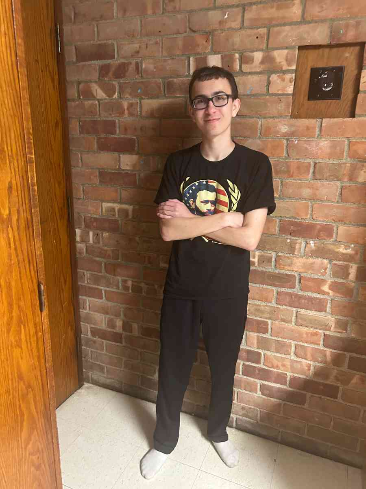
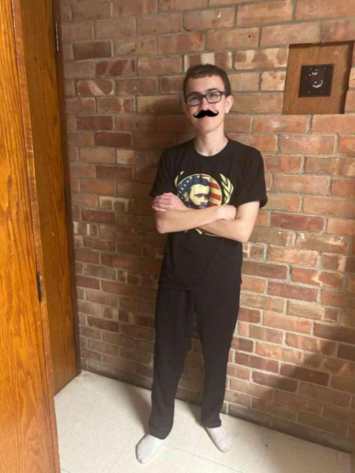
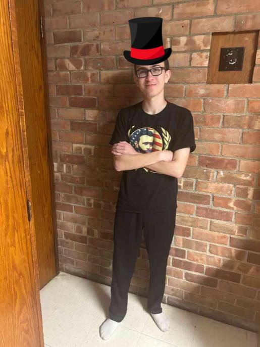

In a little known historical event, before his fatal duel with Aaron Burr, Alexander Hamilton dueled a lobster that disrespected his honor. They both walked 10 paces, turned around, and fired! The lobster had been hit and Hamilton had won the duel, but before anyone could think, our great-great-great-great-grandfather Jebediah Projansky picked up the lobster and pan-fried it to perfection, beginning the Projansky family's love of seafood! Since then, we've dedicated our lives to honoring the life of that great lobster by spreading the joy of the ocean throughout the world through delicious seafood meals.
Here at the Lobster Bowl, we value our local shops and fishermen, so we do whatever we can to support them while ensuring that our customers receive the freshest food imaginable. The Projansky technique of lobster fishing has been passed down through the generations, giving our lobster a unique taste you can't find anywhere else! We also source our shrimp and swordfish from a family friend, Brooke, who runs a shop up the coast, and our oysters and clams come courtesy of Toose and Swales' Seafood Supply run by Kayla and Kylie down the street!


